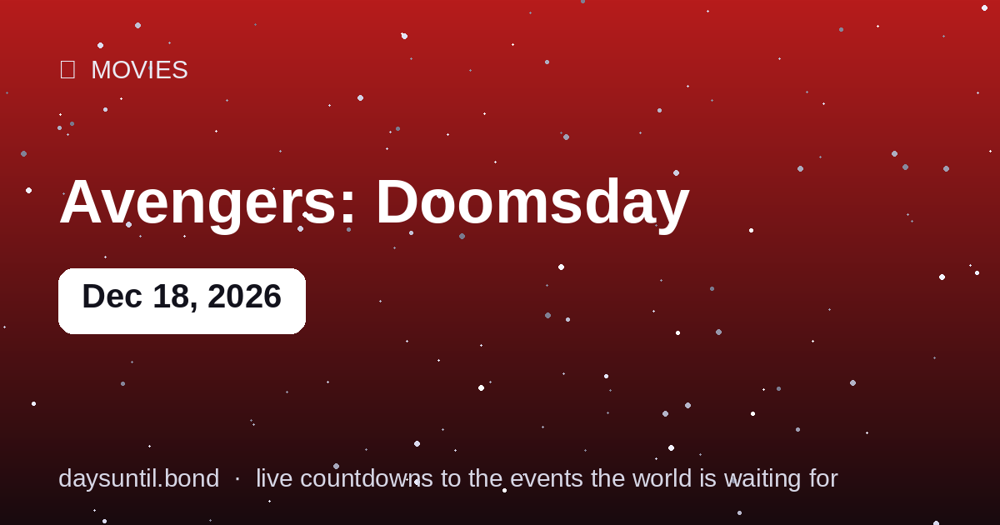

How Many Days Until Avengers: Doomsday?
Avengers: Doomsday falls on Friday, December 18, 2026.
The live counter above updates every second in your local time zone. The date and weekday are shown in the event details.

Quick facts
| Date | Friday, December 18, 2026 |
|---|---|
| Days away | Live counter above |
| Runtime | Not announced by Marvel |
| Directors | Anthony and Joe Russo |
| Villain | Doctor Doom (Robert Downey Jr.) |
| Also out that day | Dune: Part Three |
About Avengers: Doomsday
How many days until Avengers: Doomsday? Marvel's official movie listing currently gives Friday, December 18, 2026, as the theatrical release date. The live countdown above calculates the time remaining in your local time zone and updates every second. Release dates can vary by market and may change.
Avengers: Doomsday is currently scheduled for the same date as Dune: Part Three. The two films' showtimes and screen formats will depend on local cinema schedules; check your cinema's listings closer to release.
It's the endgame of the Multiverse Saga's Phase Six — and no, it's not the last Avengers movie: Secret Wars follows in 2027. Bookmark this page and watch the seconds fall toward the biggest premiere night of the year.
Marvel describes the story as a collision between heroes from three distinct universes facing an existential threat. Plot details beyond the studio's published synopsis should be treated as unconfirmed until Marvel releases them.
Why two event films share December 18, 2026
Avengers: Doomsday and Dune: Part Three are both currently scheduled for Friday, December 18, 2026. That makes the date unusually crowded for moviegoers, but it does not establish which film will receive which screen format. Cinema schedules, premium-format bookings and showtimes are set by distributors and exhibitors and can vary by market.
If you plan to see both films, compare local showtimes once tickets become available. A shared release date does not guarantee simultaneous showtimes or a particular screen format, and schedules can change as the release approaches.
What is confirmed so far
The studio-confirmed details include Anthony and Joe Russo as directors and Robert Downey Jr. returning to the MCU as Doctor Doom. Marvel's official synopsis describes heroes from three distinct universes facing an existential threat. The studio has not published a confirmed runtime on its official movie listing, so treat runtime figures circulating elsewhere as unverified.
Beyond those points, most of what circulates online is speculation or set-photograph inference. Treat plot specifics with caution until the studio publishes them — the marketing campaign for this film is unusually secretive, and that secrecy is itself the reason so much of the 'leak' traffic is unreliable.
How to see it in the best format
The best format depends on the cinema and market. Check the official listings for your local theaters to see whether standard, premium-large-format or IMAX screenings are available; do not assume either film has an exclusive screen window unless the distributor or cinema confirms it.
Ticket on-sale dates and showtimes vary by market. Use the official studio or cinema ticketing pages for current information rather than relying on estimates made several weeks in advance.
The December 2026 cinema calendar
| Date | Day | What opens | Note |
|---|---|---|---|
| Nov 19, 2026 | Thursday | Grand Theft Auto VI | Games, not cinema — but the attention competitor |
| Dec 18, 2026 | Friday | Avengers: Doomsday | Runtime not announced by Marvel |
| Dec 18, 2026 | Friday | Dune: Part Three | Filmed for IMAX; local screen allocation varies |
| Dec 25, 2026 | Friday | Christmas Day | Traditionally the biggest box-office day of the year |
What the Russo brothers bring back
Anthony and Joe Russo directed Avengers: Infinity War and Avengers: Endgame, the two films that closed the Infinity Saga and which remain the studio's commercial high-water mark. Their specific skill is the management problem: dozens of characters with existing arcs, fans who have watched everything, and a plot that has to give each of them something without collapsing under the weight of it.
Their return after a seven-year gap is the clearest signal the studio could send about how much is riding on this film. The gap also matters practically — the Russos left after Endgame, directed several non-Marvel projects, and have said repeatedly that the scale of this one is larger than anything they have attempted.
Where Doomsday sits in the saga
The film is the culmination of the Multiverse Saga, the phase that followed Endgame and that has spent several films setting up threats from outside the original timeline. That is the structural reason Doctor Doom is the antagonist: he is a character who does not belong to the Avengers' world, and a villain introduced from a parallel reality is what lets the studio bring in the X-Men and the Fantastic Four without a decade of origin films.
The ensemble billing spans several corners of the Marvel universe. The studio's final runtime and full story details should be taken from its official announcements rather than estimates or fan theories.
What to know before you go in
The two films that matter most are Avengers: Infinity War and Avengers: Endgame — the Russos' own, and the ones this film structurally follows. Beyond those, the Multiverse Saga entries are the ones paying off here, particularly the films that introduced the Fantastic Four and the Thunderbolts, since both teams are billed in the ensemble.
If you have fallen behind, the honest advice is to watch Endgame and then whatever the studio releases in the twelve months before December 2026. The marketing campaign for this film has been deliberately sparse, and the studio's own description of the cast suggests the gaps will be filled on screen rather than beforehand.
Your Avengers: Doomsday countdown milestones
It is easier to plan against fixed points than against a number that moves. These are the dates on which the countdown to Avengers: Doomsday passes each marker between now and the day itself — the last one falls on Thursday 17 December, when there will be 1 day left.
| Milestone | Day | Date | Remaining |
|---|---|---|---|
| 14 days | Friday | 04 December 2026 | 14 days to go |
| 7 days | Friday | 11 December 2026 | 7 days to go |
| 3 days | Tuesday | 15 December 2026 | 3 days to go |
| 1 days | Thursday | 17 December 2026 | 1 day to go |
How the remaining time breaks down
23 days is the headline, but it is rarely the number that helps. 17 of those are weekdays and 6 fall on a weekend, which is the split that matters if you are planning around work. It is 3 weeks and 2 days, or roughly 0.8 months, or about 552 hours.
| Unit | Until Avengers: Doomsday |
|---|---|
| Days | 23 |
| Weeks | 3 weeks and 2 days |
| Months (approx) | 0.8 |
| Weekdays | 17 |
| Weekend days | 6 |
| Hours | 552 |
| Sleeps | 23 |
Working days are Monday to Friday and do not subtract public holidays, which vary by country and employer — the full month-by-month split is on our weekday page for Avengers: Doomsday.